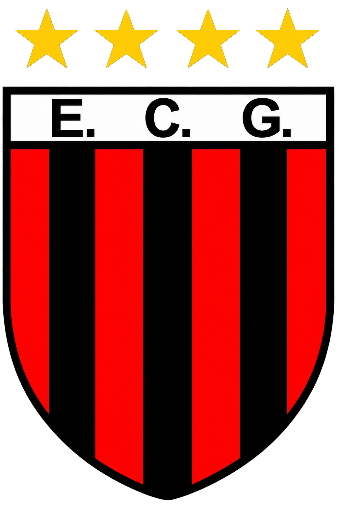
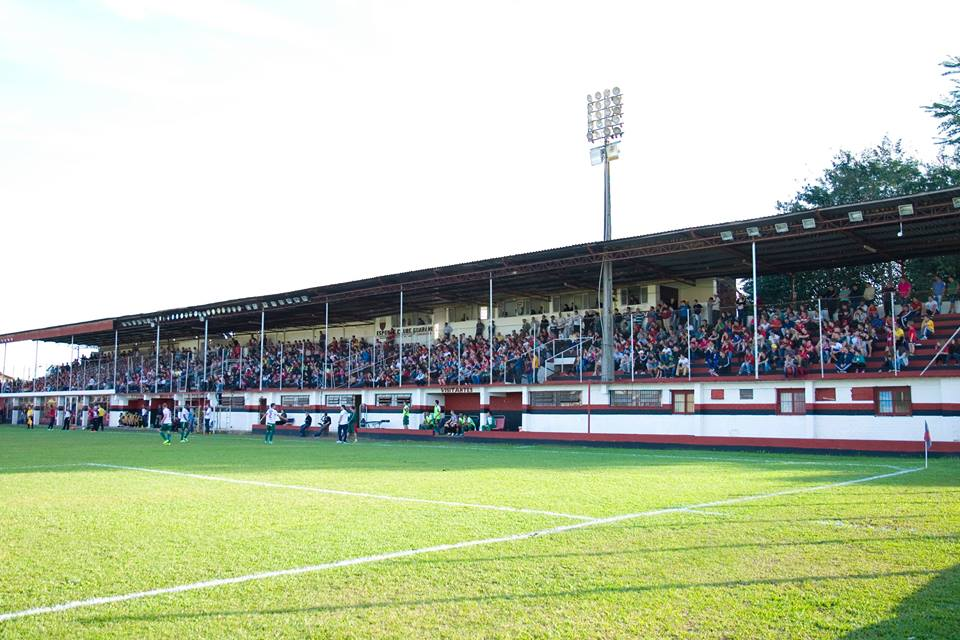

Fundação
Nasce em Venâncio Aires o clube que se tornaria conhecido como o Time Índio.

Uma história de futebol, tradição e paixão construída em Venâncio Aires.
Em 03 de Setembro de 1929 um grupo de amigos criou uma agremiação denominada Sociedade de Foot-Ball Sport Club Guarany. O nome surgiu em homenagem aos índios Guaranis, que na época acampavam junto a antiga "fonte pública", próximo ao local onde hoje está instalada a agência dos Correios, no centro de Venâncio Aires.
O primeiro campo do Guarani foi na várzea do Arroio Castelhano. Em 1933, o clube transferiu-se para o Estádio dos Eucaliptos, num local mais próximo da cidade. Mas foi em 30 de Março de 1958 que a casa rubro-negra recebeu amplas melhorias e passou a se chamar Estádio Edmundo Feix, nome dado em homenagem ao dono do terreno, que foi doado ao clube. Em 1988, o clube instalou uma potente iluminação e a partir daí pode realizar também jogos noturnos, o que na época era raro no interior do RS.
Ao longo de sua história, o Índio, como é carinhosamente chamado o Esporte Clube Guarani por seus torcedores e admiradores, conquistou excelentes colocações no futebol local, regional e estadual, através de suas categorias (escolinha, juvenis, juniores e profissionais).
Alguns capítulos importantes da trajetória rubro-negra.
Nasce em Venâncio Aires o clube que se tornaria conhecido como o Time Índio.
O Guarani passa a mandar suas partidas em uma nova casa.
O estádio passa a carregar o nome pelo qual é conhecido até hoje.
A instalação da iluminação permite a realização de partidas noturnas no estádio.
O Guarani conquista o Segundo Turno do Campeonato Gaúcho.
O Time Índio conquista o campeonato de forma invicta.

O Estádio Edmundo Feix é a casa do Esporte Clube Guarani e palco das partidas do clube em Venâncio Aires.
Algumas das principais conquistas da história do Esporte Clube Guarani.
1 título • Temporada 2025 • Campeão invicto
1 título • Temporada 2002
1 título • Temporada 2002
1 título • Temporada 1979/80
Dirigentes responsáveis pela administração do Esporte Clube Guarani.
Um dos símbolos da história, tradição e identidade do Time Índio.
Vamos saudar o glorioso rubro-negro
Da terra do chimarrão
Time de raça sangue guerreiro
É o primeiro do meu coração
És forte meu time índio
Te amo desde guri
No campo ninguém te segura
Guarani, Guarani, Guarani
Na região tu és temido
No estado tens tradição
Orgulho do presente e passado
O Guarani é nosso campeão